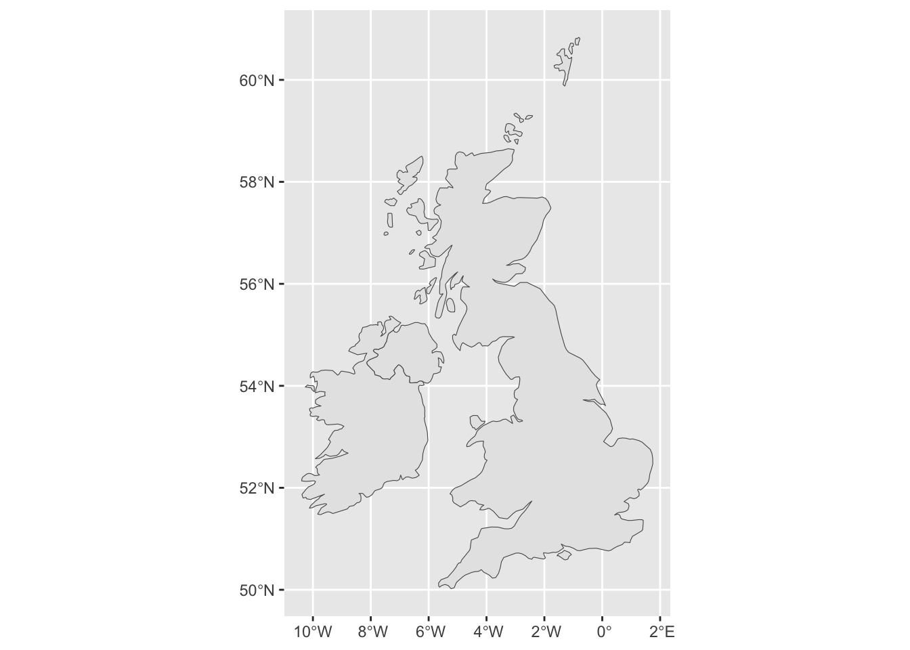
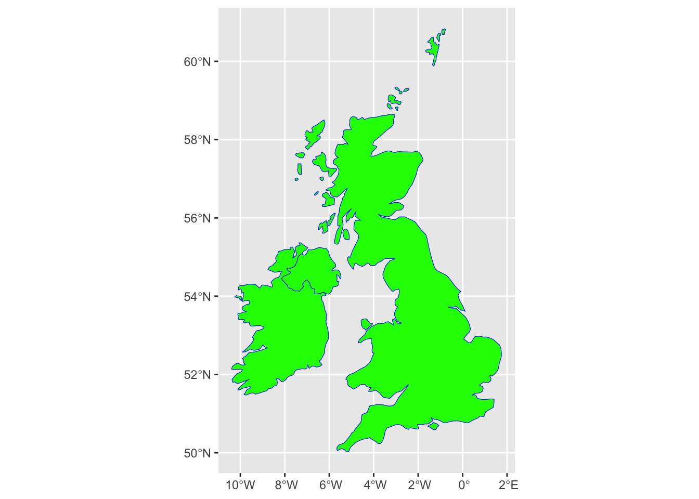
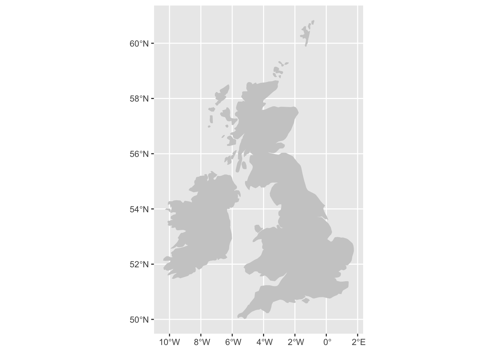
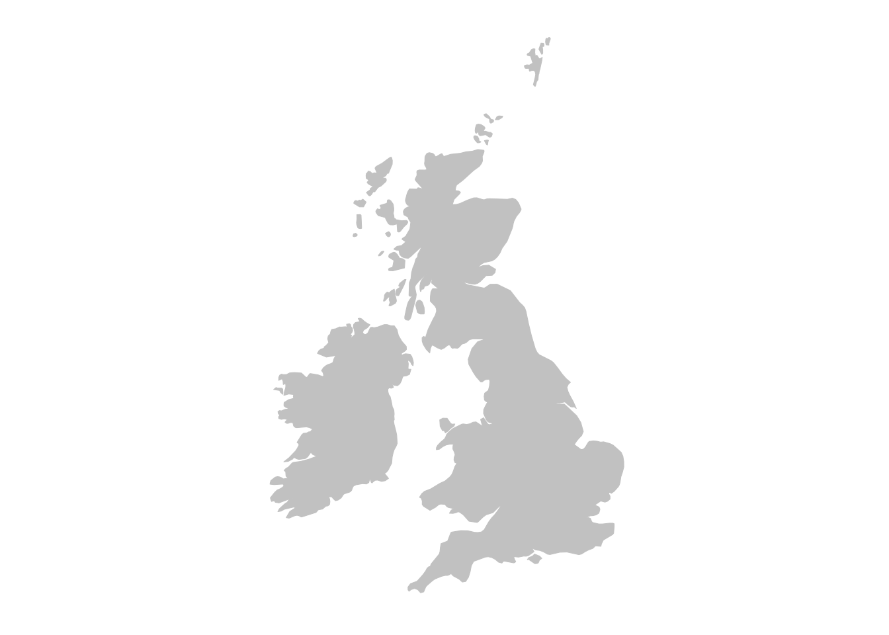
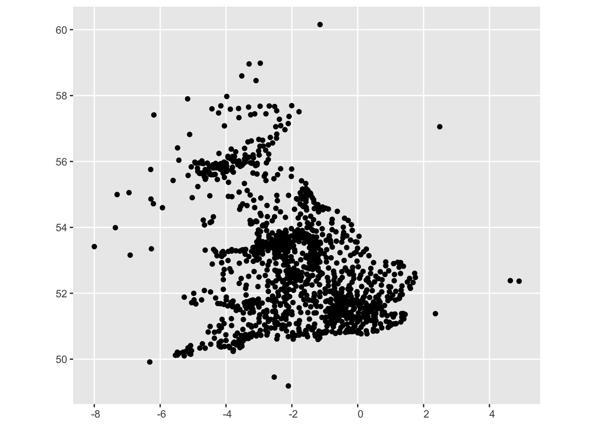
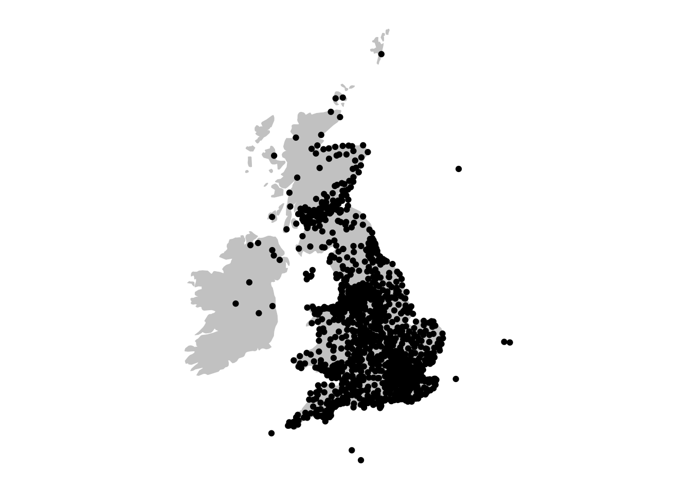
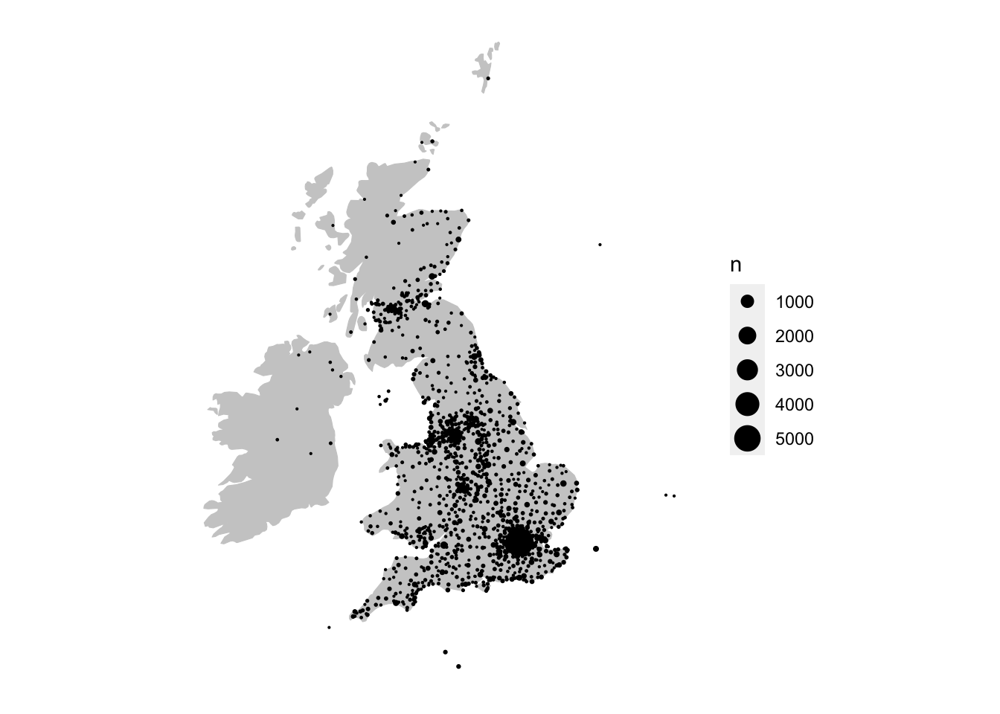
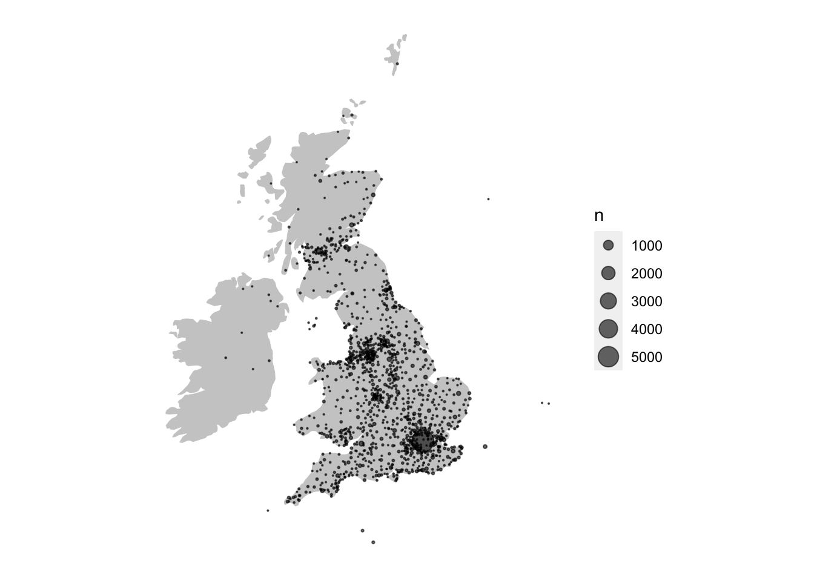
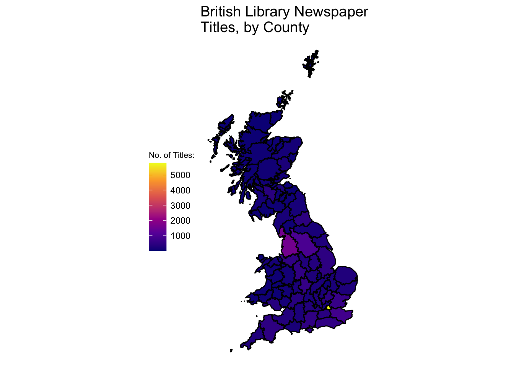

install.packages('tidyverse')
install.packages('rnaturalearth')
install.packages('sf')7 Working with Metadata: Mapping the British Library Newspaper Collection
News Metadata
While much of the rest of this book deals with text data, that is only one type of what might be considered newspaper data. Also important to consider is newspaper metadata, which can be used to understand and analyse newspaper collections and is valuable in its own right.
Key metadata sources for the British Library newspaper collection are a series of title-level lists covering UK, worldwide, and even television news, and a series of press directories, containing information on the newspapers from contemporary sources.
Title-level lists
The title list has been produced by the British Library and is published on their institutional repository. It contains metadata taken from the Library’s catalogue of every newspaper published in Britain and Ireland up until the year 2019, a total of about 24,000 titles. There is more information available in a published data paper (Ryan and McKernan 2021).
This list contains a number of fields for each title, including the name of the publication, subsequent and previous title names, several fields for geographic coverage, the first and last dates held, and some other information. Where digitised versions have been created, these are noted and links are provided. It can be used to get statistical information about the Library’s collection, such as the number of new titles per year, the proportion of material which has been digitised, and how the collection is spread geographically.
Press Directories
The Living with Machines project has digitised a number of press directories, between 1846 and 1920. These directories were produced by a number of companies, and were intended for advertisers and others as a guide to the content and coverage of printed newspapers. They contain information on the newspaper owners, geographic coverage, political leaning, and circulation. This, along with the title list, can serve as an excellent source for mapping, analysing, and visualising the newspaper collection at scale.
The directories have been digitised and the ‘raw’ .xml from the OCR process has been made available. Additionally, a single file where the information has been extracted and standardised, can also be downloaded.
Producing Maps With Metadata and R
The following two short tutorials aim to show how this kind of metadata can also be used to produce visualisations, and use the title list to produce a data map of the newspaper collection in Great Britain. They also aim to teach the reader how R can be used a GIS (Geographic Information System), and produce high-quality maps.
There are two, related tutorials. First, the title list is used to draw a map of points, relating to the number of newspaper titles published in each location. The second tutorial will guide you through creating a thematic, or choropleth map, using the same data.
Mapping Data as Points
Lesson Steps
The basic steps to create a map of points are as follows: 1) download a base map of the UK and Ireland, 2) count the total number of titles of each city and merge this with coordinate information on those cities and 3) create a shapefile out of that information, 4) draw both the basic map and the points on top of it.
To do this we’ll need three elements:
A background map of the UK and Ireland
A count of the total titles for each city
A list of coordinates for each place mentioned in the title list.
Requirements
This lesson assumes that you have some basic knowledge of R, and in particular, the package ggplot2. Not every step using this package is fully explained. You might want to refresh your knowledge by reading over Chapter 6, which gives a very short introduction.
On top of the packages used already, most importantly tidyverse, you’ll need to install a few more packages if you don’t have them already:
the
sfpackage, which we’ll use to create and work with the geographic dataThe
rnaturalearthpackage. This will be used to download the underlying map of the UK and Ireland, on which the points will be overlaid.
To install all the necessary packages, you can use the following code:
Lastly, you’ll need to download a file containing the coordinate locations for the places in the title list, because this information is not included. This file can be downloaded here.
Download a ‘basemap’
The first step is to download a basemap: data containing the shape of the background area onto which the points will be overlaid. The easiest way to do this in R is to install the rnaturalearth package. This package makes it easy to download shapefiles: data containing polygons of various maps of the earth, containing shapes for everything from political borders to lakes and rivers.
Once you have installed the rnaturalearth and sf packages, load them as well as the tidyverse
library(tidyverse)
library(rnaturalearth)
library(sf)Next, use the rnaturalearth package to download a map of the UK and Ireland. There are a number of different shapefiles in the Natural Earth database we could choose from. One is ‘countries’, which is a set of connected shapes, one for each country on Earth. The other is ‘coastline’, which you could think of as a single continuous shape tracing the entire coastline of the planet.
Both have advantages and disadvantages. Using ‘countries’ makes it easy to just download the information for specific countries. However, it does mean that the shapes contain modern internal borders, which might not be suitable in all cases (if you are making a history map of Europe, for example).
In this case, we’ll use the ‘countries’ database. Use the ne_countries function from the rnaturalearth package to download the relevant shapes and save to a variable called uk_ireland_sf. We have to set a number of parameters in the function:
scale is set to "medium": this is the resolution of the shapes (how detailed they will be). Medium is fine at this level.
country is set to a vector of the country names we want, in this case Ireland and the UK.
returnclass is set to sf. This is the format for the geographic information which we’ll use with the sf package. sf stands for ‘shapefile’, and is a standardised way of representing geographic data, which is also easy to query as a dataset, for example to filter or summarise the data. rnaturalearth can return a file in this format automatically.
uk_ireland_sf = ne_countries(scale = 'medium',
country = c("United Kingdom", "Ireland"),
returnclass = 'sf')Once you run this, you should have a new variable called uk_ireland_sf. We can draw this to check exactly what has been downloaded. To do this, we can use a function in ggplot2 called geom_sf(). This geom draws geographic information from shapefiles.
ggplot() + geom_sf(data = uk_ireland_sf)
Now is a good moment to demonstrate some features of ggplot2 which are particularly relevant for mapping. This map is a good starting point, but some parts of it should be improved to make it more readable: we don’t need the border in Northern Ireland to be drawn, we don’t want the coordinates written on the x and y axes, and we want a simpler, single colour background.
Let’s start by making some changes to the colour. We can change both the line and the fill colours. To do this, we add some parameters to the geom_sf() function. The color parameter will set the outer borders, and the fill parameter the inside of the shape. To make the differences obvious I’ll use two very distinct colours:
ggplot() +
geom_sf(data = uk_ireland_sf, color = 'blue', fill = 'green') 
Remember we chose ‘countries’ rather than ‘coastline’ above? One small drawback is that we can’t draw a map using the countries data where a distinct line surrounds both islands. One quite legible way to draw the map is to have a lightly-coloured background and render the entire map shape, both internal and external lines, in a single colour. To do this, we’ll set both color and fill to a medium/light gray:
ggplot() +
geom_sf(data = uk_ireland_sf, color = 'gray80', fill = 'gray80') 
Next, we’ll get rid of the background clutter. The following code will remove the background and axis text:
ggplot() +
geom_sf(data = uk_ireland_sf, color = 'gray80', fill = 'gray80') +
theme(axis.text = element_blank(),
axis.ticks = element_blank(),
panel.background = element_blank()
) 
Now we have a map onto which we can draw the points.
Cropping the Map
In some cases, you may want to crop a map further. We can do that with coord_sf(). coord_fixed() is used to fix the aspect ratio of a coordinate system, but can be used to specify a bounding box by using two of its arguments: xlim= and ylim=.
These each take a vector (a series of numbers) with two items A vector is created using c(). Each item in the vector specifies the limits for that axis. So xlim = c(0,10) means restrict the x-axis to 0 and 10.
The axes correspond to the lines of longitude (x) and latitude (y). We’ll restrict the x-axis to c(-10, 4) and the y-axis to c(50.3, 60) which should just about cover the UK and Ireland.
ggplot() +
geom_sf(data = uk_ireland_sf, color = 'gray80', fill = 'gray80') +
theme(axis.text = element_blank(),
axis.ticks = element_blank(),
panel.background = element_blank()
) +
coord_sf(xlim = c(-10,3),
ylim = c(50.3, 59))Add Sized Points By Coordinates
On top of this basemap, we will draw a set of points, sized by the count of newspapers from each place in a metadata list of newspaper titles from the British Library.
Doing this involves a few steps:
Download a metadata list of newspaper titles held by the British Library
Generate a new dataset, containing a total count the newspapers from each place in this title list.
Merge this with a dataset of coordinates for each place
Turn this information into a shapefile, as the map downloaded above.
Draw the points on top of the base map.
Download the metadata list
To start with, we’ll need a complete list of the newspaper titles held in by in the British Library’s collection. This is available as a free download through the Open Research Repository. Go to the repository page and download the file BritishAndIrishNewspapersTitleList_20191118.zip (or just click the link to directly download).
Unzip this file and note where you save it. It will contain a .csv file with the metadata list. Import this to R with the following (replace the 'data/BritishAndIrishNewspapersTitleList_20191118.csv' with the path to your file):
title_list = read_csv('data/BritishAndIrishNewspapersTitleList_20191118.csv')Next, create a new dataframe, which will simply be count of the appearances of each place in the metadata. Use the dplyr commands group_by() and tally(), which will count the instances of each different combination of the three geographic information columns:
location_counts = title_list %>%
group_by(country_of_publication,
general_area_of_coverage,
coverage_city) %>%
tally()This new dataframe, location_counts, will have one row for each combination of country/general area/city in the data, along with a new column, n, containing the count:
location_counts %>% head(5) %>% kableExtra::kbl() | country_of_publication | general_area_of_coverage | coverage_city | n |
|---|---|---|---|
| Bermuda Islands | NA | Hamilton | 23 |
| Bermuda Islands | NA | Saint George | 1 |
| Cayman Islands | NA | Georgetown | 1 |
| England | Aberdeenshire (Scotland) | Peterhead | 1 |
| England | Acton (London, England) | Ealing (London, England) | 1 |
Get hold of a list of geocoordinates
To create the shapefile and visualise the data, the next step is to merge this text information on the places, to a dataset of coordinates. For this, you’ll need existing coordinate information, which has been created separately. This file is available online from the following source. If you run this code, it will import the coordinate file directly into R from its storage place on Github.
geocorrected = read_csv('https://raw.githubusercontent.com/yann-ryan/r-for-news-data/master/data/geocorrected.csv')This file also needs some pre-processing. A preliminary step here is to change the column names so that they match those found in the metadata:
library(snakecase)
colnames(geocorrected) = to_snake_case(colnames(geocorrected))There are a few further pieces of pre-processing to do before we can merge this to the location_counts dataframe. We’ll change some of the column names and remove some unnecessary ones, and change the na values to NA, which is properly recognised by R. Last, we’ll change the coordinate information to numeric values, and then filter out any rows with missing coordinate information:
colnames(geocorrected)[7:8] = c('lat',
'lng')
geocorrected = geocorrected %>%
select(-1, -5,-9,-10, -11, -12)
geocorrected = geocorrected %>%
mutate(country_of_publication = replace(country_of_publication,
country_of_publication == 'na', NA)) %>%
mutate(general_area_of_coverage = replace(general_area_of_coverage,
general_area_of_coverage == 'na', NA)) %>%
mutate(coverage_city = replace(coverage_city,
coverage_city == 'na', NA))
geocorrected = geocorrected %>%
mutate(lat = as.numeric(lat)) %>%
mutate(lng = as.numeric(lng)) %>%
filter(!is.na(lat)) %>% filter(!is.na(lng))
geocorrected %>% head(5)%>% kableExtra::kbl() | coverage_city | general_area_of_coverage | country_of_publication | wikititle | lat | lng |
|---|---|---|---|---|---|
| Afghanistan | Afghanistan | England | Afghanistan | 33.0000 | 65.00 |
| Airdrie | Airdrie | England | Airdrie,_North_Lanarkshire | 55.8600 | -3.98 |
| Albania | Albania | England | Albania | 41.0000 | 20.00 |
| Australia | Australia | England | Australia | -25.0000 | 133.00 |
| Bahrain | Bahrain | England | Bahrain | 26.0275 | 50.55 |
The result is a dataframe with a set of longitude and latitude points (they come from Wikipedia, which is why they are prefixed with wiki) for every combination of city/county/country in the list of titles. These can be joined to the full title list with the following method:
Using left_join() we will merge these dataframes, joining up each set of location information to its coordinates and standardised name. left_join() is a very common command in data analysis. It merges two sets of data by matching a value known as a key.
Here the key is actually a combination of three values - city, county and country, and it matches up the two sets of data by ‘joining’ two rows together, if they share all three of these values. Store this is a new variable called lc_with_geo.
lc_with_geo = location_counts %>%
left_join(geocorrected,
by = c('coverage_city' ,
'general_area_of_coverage',
'country_of_publication')) %>%
filter(!is.na(lat))If you look at this new dataset, you’ll see that now the counts of locations have merged with the geocorrected data. Now we have an amount and coordinates for each place.
head(lc_with_geo, 10)%>% kableExtra::kbl() | country_of_publication | general_area_of_coverage | coverage_city | n | wikititle | lat | lng |
|---|---|---|---|---|---|---|
| England | Avon | Bath | 88 | UNKNOWN | 51.3811 | 2.35900 |
| England | Avon | Bristol | 175 | Bristol | 51.4500 | -2.58333 |
| England | Avon | Clevedon | 14 | Clevedon | 51.4380 | -2.85400 |
| England | Avon | Keynsham | 4 | Keynsham | 51.4135 | -2.49680 |
| England | Avon | Nailsea | 2 | Nailsea | 51.4300 | -2.76000 |
| England | Avon | Norton | 4 | UNKNOWN | 51.2842 | -2.48170 |
| England | Avon | Portishead | 2 | Portishead,_Somerset | 51.4840 | -2.76260 |
| England | Avon | Radstock | 6 | Radstock | 51.2927 | -2.44770 |
| England | Avon | Thornbury | 3 | Thornbury,_Gloucestershire | 51.6094 | -2.52490 |
| England | Avon | Weston-super-Mare | 23 | Weston-super-Mare | 51.3460 | -2.97700 |
A next step is to use group_by() and tally() again, this time on the the wikititle, lat and lng columns. This is because the wikititle is a standardised title, which means it will group together cities properly, rather than giving a different row for slightly different combinations of the three geographic information columns (incidentally, it could also be used to link to wikidata). At the same time, filter again to ensure no rows are missing latitude or longitude information:
lc_with_geo_counts = lc_with_geo %>%
group_by(wikititle, lat, lng) %>%
tally(n) %>% filter(!is.na(lat)& !is.na(lng))Now we’ve got a dataframe with counts of total newspapers, for each standardised wikipedia title in the dataset.
knitr::kable(head(lc_with_geo_counts,10))| wikititle | lat | lng | n |
|---|---|---|---|
| Abbots_Langley | 51.7010 | -0.4160 | 1 |
| Aberavon_(UK_Parliament_constituency) | 51.6000 | -3.8120 | 1 |
| Aberdare | 51.7130 | -3.4450 | 20 |
| Aberdeen | 57.1500 | -2.1100 | 82 |
| Abergavenny | 51.8240 | -3.0167 | 9 |
| Abergele | 53.2800 | -3.5800 | 8 |
| Abersychan | 51.7239 | -3.0587 | 2 |
| Abertillery | 51.7300 | -3.1300 | 2 |
| Aberystwyth | 52.4140 | -4.0810 | 31 |
| Abingdon-on-Thames | 51.6670 | -1.2830 | 23 |
Finally, create the ‘shapefile’ object. To do this from a dataframe, we’ll use a function st_as_sf from the sf package. Also specify the columns this function should use as the coordinates for the shapefile, using the coords = parameter, and specify in a vector the longitude and latitude columns from the data:
lc_with_geo_counts_sf = lc_with_geo_counts %>%
st_as_sf(coords = c('lng', 'lat'))We can draw this shapefile using geom_sf, to check and see that it looks reasonable:
ggplot() + geom_sf(data = lc_with_geo_counts_sf)
Setting a Coordinate Reference System (CRS)
To create the final map, there’s one more important step. A shapefile is not just a list of coordinates, but also includes a ‘coordinate reference system’ (CRS), which tells how the coordinates in that shapefile should be interpreted. As a first step, we’ll set both our shapefiles to have the same CRS:
uk_ireland_sf = uk_ireland_sf %>% st_set_crs(4326)
lc_with_geo_counts_sf = lc_with_geo_counts_sf %>% st_set_crs(4326)Creating the Final Map
First we’ll start with the base map from the first steps:
ggplot() +
geom_sf(data = uk_ireland_sf, color = 'gray80', fill = 'gray80') +
theme(axis.text = element_blank(),
axis.ticks = element_blank(),
panel.background = element_blank()
)Next, plot the newspaper place information on top of this using another geom_sf. The second one is added to the first layer using a + sign:
ggplot() +
geom_sf(data = uk_ireland_sf, color = 'gray80', fill = 'gray80') +
theme(axis.text = element_blank(),
axis.ticks = element_blank(),
panel.background = element_blank()
) +
geom_sf(data = lc_with_geo_counts_sf)
We see that the points are drawn on top of the base map. To make the map more informative and legible, there are a few more things we can do. First, size the points by the count of the instances (column ‘n’). This is done by setting the size aesthetic in ggplot to the column name, inside the aes(). We’ll also add the command scale_size_area() to the code, which better represents the relationship between the numeric value and the circle size:
ggplot() +
geom_sf(data = uk_ireland_sf, color = 'gray80', fill = 'gray80') +
theme(axis.text = element_blank(),
axis.ticks = element_blank(),
panel.background = element_blank()
) +
geom_sf(data = lc_with_geo_counts_sf, aes(size = n)) + scale_size_area()
We can also reduce the transparency of the points to make them more readable, using the alpha aesthetic:
ggplot() +
geom_sf(data = uk_ireland_sf, color = 'gray80', fill = 'gray80') +
theme(axis.text = element_blank(),
axis.ticks = element_blank(),
panel.background = element_blank()
) +
geom_sf(data = lc_with_geo_counts_sf, aes(size = n), alpha = .6) +
scale_size_area() 
Using labs(), add a title, and with scale_size_area() and scale_color_viridis_c(), make some changes to the size and colours, respectively.
Drawing a newspaper titles ‘Choropleth’ map with R and the sf package
Another type of map is known as a ‘choropleth’. This is where the data is visualised by a certain polygon area rather than a point. Typically these represent areas like parishes, counties or countries. Using the library sf a choropleth map can be made quite quickly.
To do this, we will use the sf package to merge the information at the coordinate level with information on the geographic county borders. Next, we’ll count the number of titles within each county, and use this total to color or shade the map. The good thing about this method is that once you have a set of coordinates, they can be situated within any shapefile - a historic map, for example. This is particularly useful for anything to do with English counties, which have changed several times throughout history.
This section uses data from .visionofbritain.co.uk, which needs to be downloaded separately. You could also use the free boundary data here: https://www.ordnancesurvey.co.uk/business-government/products/boundaryline, which contains boundaries for both modern and historic counties.
This is an excellent source, and the file includes a range of boundaries including counties but also districts and constituencies, under an ‘Open Government Licence’.
Choropleth map steps
The steps to create this type of map:
- Download shapefiles for England and scotland from here
- Turn into sf object Download list of points, turn into sf object
- Use st join to get county information
- Join to the title list and deselect everything except county and titles - maybe 19th century only..
- Join that to the sf object Plot using geom_sf()
Load libraries
library(tidyverse)
library(sf)
sf::sf_use_s2(FALSE)Get county information from the title list
Next, download (if you haven’t already) the title list from the British Library open repository.
title_df = read_csv('data/BritishAndIrishNewspapersTitleList_20191118.csv')Download shapefiles
First, download the relevant shapefiles. These don’t necessarily have to be historic ones. Use st_read() to read the file, specifying its path. Do this for England, Wales and Scotland (we don’t have points for Ireland).
Transform from UTM to lat/long using st_transform()
These shapefiles use points system known as UTM, which stands for ‘Universal Transverse Mercator’. According to wikipedia,
it differs from global latitude/longitude in that it divides earth into 60 zones and projects each to the plane as a basis for its coordinates.
It needs to be transformed into lat/long coordinates, because the coordinates we have are in that format. This is easy with st_transform():
eng_1851 = st_transform(eng_1851, crs = 4326)scot_1851 = st_transform(scot_1851, crs = 4326)Bind them both together, using rbind() to make one big shapefile for Great Britain.
gb1851 = rbind(eng_1851, scot_1851 %>%
select(-UL_AUTH))Download and merge the title list with a set of coordinates.
Next, load and pre-process the set of coordinates:
geocorrected = read_csv('data/geocorrected.csv')Change the column names:
library(snakecase)
colnames(geocorrected) = to_snake_case(colnames(geocorrected))Change some column names further, select just the relevant columns, change the NA values and get rid of any empty entries.
colnames(geocorrected)[6:8] = c('wikititle', 'lat', 'lng')
geocorrected = geocorrected %>% select(-1, -9,-10, -11, -12)
geocorrected = geocorrected %>%
mutate(country_of_publication = replace(country_of_publication,
country_of_publication == 'na', NA)) %>% mutate(general_area_of_coverage = replace(general_area_of_coverage,
general_area_of_coverage == 'na', NA)) %>%
mutate(coverage_city = replace(coverage_city,
coverage_city == 'na', NA))
geocorrected = geocorrected %>%
mutate(lat = as.numeric(lat)) %>%
mutate(lng = as.numeric(lng)) %>%
filter(!is.na(lat)) %>%
filter(!is.na(lng))Next, join these points to the title list, so that every title now has a set of lat/long coordinates.
title_df = title_df %>%
left_join(geocorrected) %>%
filter(!is.na(lat)) %>%
filter(!is.na(lng))Using st_join to connect the title list to the shapefile
To join this to the shapefile, we need to turn it in to an simple features item. To do this we need to specify the coordinates and the CRS. The resulting file will contain a new column called ‘geometry’, containing the lat/long coordaintes in the correct simple features format.
st_title = st_as_sf(title_df, coords = c('lng', 'lat'))
st_title = st_title %>% st_set_crs(4326)Now, we can use a special kind of join, which will join the points in the title list, if they are within a particular polygon. The resulting dataset now has the relevant county, as found in the shapefile.
st_counties = st_join(st_title, gb1851)Make a new dataframe, containing just the counties and their counts.
county_tally = st_counties %>%
select(G_NAME) %>%
group_by(G_NAME) %>%
tally() %>%
st_drop_geometry()Draw using ggplot2 and geom_sf()
Join this to the shapefile we made earlier, which gives a dataset with the relevant counts attached to each polygon. This can then be visualised using the geom_sf() function from ggplot2, and all of ggplot2’s other features can be used.
gb1851 %>%
left_join(county_tally) %>%
ggplot() +
geom_sf(lwd = .5,color = 'black', aes(fill = n)) +
theme_void() +
lims(fill = c(10,4000)) +
scale_fill_viridis_c(option = 'plasma') +
labs(title = "British Library Newspaper\nTitles, by County",
fill = 'No. of Titles:') +
theme(legend.position = 'left') +
theme(title = element_text(size = 12),
legend.title = element_text(size = 8))
Recommended Reading
This article uses both of these metadata files (the title list and the press directories) as its historical evidence:
Kaspar Beelen and others, Bias and representativeness in digitized newspaper collections: Introducing the environmental scan, Digital Scholarship in the Humanities, Volume 38, Issue 1, April 2023, Pages 1–22, https://doi.org/10.1093/llc/fqac037
The book ‘Geocomputation with R’ is a fantastic resource for learning about mapping: https://geocompr.robinlovelace.net.